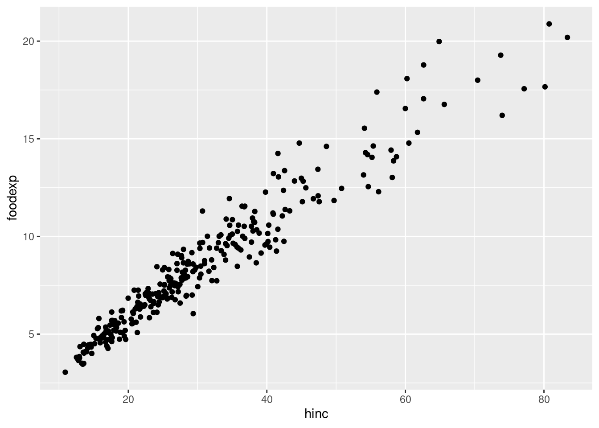
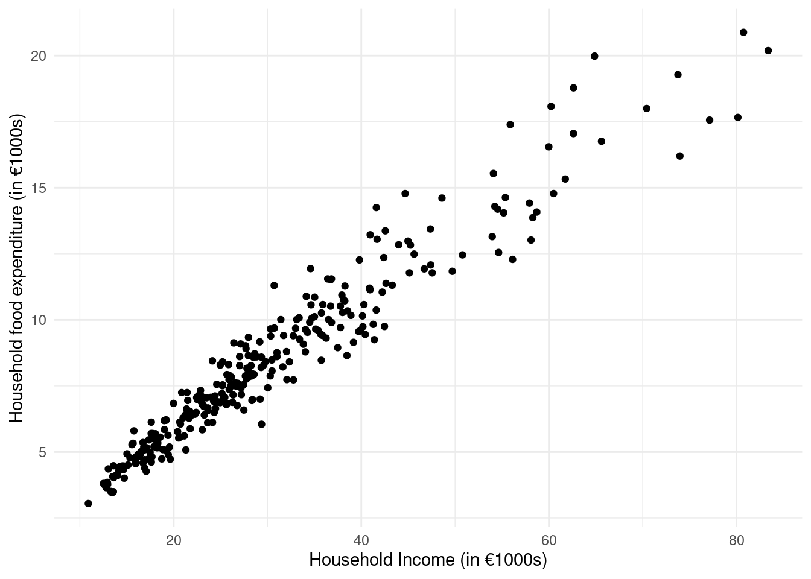

df <- read.csv("instruction2.csv")Instruction Exercise Week 2
Introduction
The file instruction2.csv contains the following two variables for a random sample of households:
- Y: annual food expenditures (in €1,000s)
- X: annual income (in €1,000s)
Exercises
- Create a scatter plot of X and Y and comment.
- Estimate a simple linear regression model and report estimates of \beta_0, \beta_1 and \sigma_\varepsilon.
- Interpret the estimated coefficients, b_0 and b_1.
- Plot the residuals against the x variable. Comment on the appropriateness of the homoskedasticity assumption.
- Plot the predicted values against the x variable. Why are all the points on a straight line?
- Is the model useful? Test it using a critical value approach with a significance level of \alpha=0.05.
- Construct a 95% confidence interval for the slope coefficient and interpret it.
Solutions
Question 1
After saving the dataset in a project folder, we can load it into R with:
We can create a basic scatter plot with:
library(ggplot2)
ggplot(df, aes(hinc, foodexp)) + geom_point()
We can create a customized scatter plot with:
ggplot(df, aes(hinc, foodexp)) +
geom_point() +
xlab("Household Income (in €1000s)") +
ylab("Household food expenditure (in €1000s)") +
theme_minimal()
From the scatter plot we see there is a strong positive linear relationship between household income and food expenditure.
Question 2
We can estimate the linear model with:
m <- lm(foodexp ~ hinc, data = df)
summary(m)
Call:
lm(formula = foodexp ~ hinc, data = df)
Residuals:
Min 1Q Median 3Q Max
-2.8167 -0.5158 -0.0618 0.4286 3.1876
Coefficients:
Estimate Std. Error t value Pr(>|t|)
(Intercept) 1.151193 0.126199 9.122 <2e-16 ***
hinc 0.241117 0.003772 63.926 <2e-16 ***
---
Signif. codes: 0 '***' 0.001 '**' 0.01 '*' 0.05 '.' 0.1 ' ' 1
Residual standard error: 0.9093 on 298 degrees of freedom
Multiple R-squared: 0.932, Adjusted R-squared: 0.9318
F-statistic: 4087 on 1 and 298 DF, p-value: < 2.2e-16The estimates of the coefficients \beta_0 and \beta_1 are:
coef(m)(Intercept) hinc
1.1511926 0.2411168 The estimate of the standard error of the model \sigma_\varepsilon can be seen in the model summary output (0.9093). It can be extracted with either:
summary(m)$sigma[1] 0.9092579We can also calculate it directly from the vector of residuals m$residuals and the degrees of freedom n-2 (stored in m$df.residual):
sqrt(sum(m$residuals^2) / m$df.residual)[1] 0.9092579Question 3
To interpret b_0, we say that b_0 is the model’s prediction of y when x=0 (but is unreliable when we don’t observe data at or near zero). So the intercept of 1.1511926 means that the model predicts that households with zero income on average spend €1,151.19 on food per year. However, we don’t observe any observations with a household income at or near zero:
summary(df$hinc) Min. 1st Qu. Median Mean 3rd Qu. Max.
10.90 20.50 27.33 30.43 36.82 83.38 The lowest household income is €10,900. Therefore we cannot take this prediction as reliable.
To interpret b_1, we say that a one-unit increase in x on average leads to an increase of b_1 units of y. So the slope of 0.2411168 means that a €1,000 increase in household income on average leads to an increase of €241.17 in food expenditure
Question 4
We add the residuals to our dataframe and create a scatter plot:
df$e <- m$residuals
ggplot(df, aes(hinc, e)) + geom_point()We can see that the dispersion of the residuals increases as the x variable increases. This is evidence of heteroskedasticity. Therefore we cannot trust the estimates of the standard errors (and as a result, test statistics, p-values and confidence intervals).
Question 5
We add the predicted values to our dataframe and create a scatter plot:
df$yhat <- m$fitted.values
ggplot(df, aes(hinc, yhat)) + geom_point()All the points are on a straight line because we are plotting: \hat{y}_i = b_0 + b_1 x_i against x_i. Because \hat{y}_i is a linear function of x_i (without error), all the points will be on a straight line.
Question 6
The null and alternative hypotheses are: H_0: \beta_1 = 0 \qquad H_1: \beta_1 \neq 0 where H_0 is “the model is useless” and H_1 is “the model is useful”. Under H_0, T=\frac{B_1}{S_{B_1}}\sim t_{n-2}. We can see the value of the test statistic from the summary table:
summary(m)
Call:
lm(formula = foodexp ~ hinc, data = df)
Residuals:
Min 1Q Median 3Q Max
-2.8167 -0.5158 -0.0618 0.4286 3.1876
Coefficients:
Estimate Std. Error t value Pr(>|t|)
(Intercept) 1.151193 0.126199 9.122 <2e-16 ***
hinc 0.241117 0.003772 63.926 <2e-16 ***
---
Signif. codes: 0 '***' 0.001 '**' 0.01 '*' 0.05 '.' 0.1 ' ' 1
Residual standard error: 0.9093 on 298 degrees of freedom
Multiple R-squared: 0.932, Adjusted R-squared: 0.9318
F-statistic: 4087 on 1 and 298 DF, p-value: < 2.2e-16We can extract it with:
(t <- coef(summary(m))["hinc", "t value"])[1] 63.92647The critical value is:
(cf <- qt(0.975, m$df.residual))[1] 1.967957Because the absolute value of the test statistic is larger than the critical value:
abs(t) >= cf[1] TRUEWe reject the null hypothesis. The model is useful.
Question 7
We can obtain a 95% confidence interval for the slope with:
confint(m, "hinc", level = 0.95) 2.5 % 97.5 %
hinc 0.2336941 0.2485395This means we are 95% confident that the true \beta_1 is between 0.2337 and 0.2485. The entire confidence interval lies above zero so we are 95% confident that clothing expenditure varies with household income.